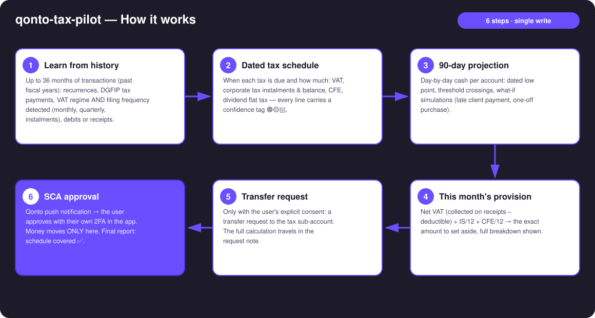
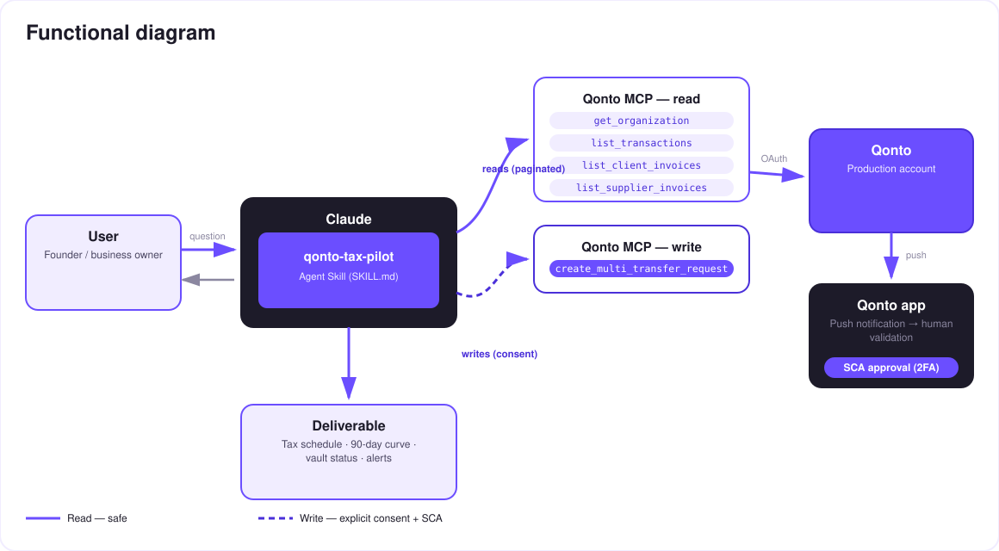

Predict the taxman, then move the money out of harm's way — a tax copilot for your Qonto account.
The number-one cash killer for small businesses isn't revenue — it's VAT money that was already spent when the notice arrives. The skill turns a Qonto account into a tax copilot:
When each tax is due and how much — VAT, corporate tax instalments & balance, CFE, dividend flat tax — confidence-tagged 🟢🟡🔵 per line.
Day-by-day cash per account: dated low point, threshold crossings, what-if simulations.
Net VAT (on receipts when detected!) + IS/12 + CFE/12 — full breakdown shown.
A transfer request to the tax sub-account — money moves only after SCA approval in the app.
Would someone use this on a Monday morning? It's literally a first-of-the-month ritual.
| Prerequisite | Detail | Required |
|---|---|---|
| Qonto production account | Adapts to any organization — get_organization first, nothing hardcoded | ✅ |
| Qonto MCP connected | Official connector (claude.ai / Claude Desktop), OAuth login | ✅ |
| A "tax" sub-account | Created once in the Qonto app (the MCP has no account-creation tool). Detected by name: tax / taxe / impôt / TVA | ⭕ recommended — otherwise compute-only |
| ≥ 6 months of history | Below that: honest degradation (🟡 tags + warning) | ⭕ |
| French company at IS | Default assumption; wording adapts otherwise | ⭕ |

vat_payment_condition: "on_receipts" → VAT follows client payments, not issued invoicesvat_amount — announced as a floor, with the count of untagged debits disclosedemitted_at vs settled_at), refunds deducted from collected VAT
The security model, not a limitation: reads are risk-free; the write requires explicit consent in the conversation and only produces a request. The account holder's own SCA (2FA), in the Qonto app, is what moves money. Neither Claude nor the MCP can.
| Deadline | Tax | Estimation |
|---|---|---|
| Monthly or quarterly ~15th–24th (standard; quarterly if annual VAT < €4,000) | VAT CA3 | Median of recent payments, refined by collected − deductible |
| July 55% + December 40% | VAT instalments (simplified — abolished 2027-01-01) | Last CA12 / historical payments |
| 15/03 · 15/06 · 15/09 · 15/12 | Corporate tax instalments (2571) | Past instalments, else IS N-1 ÷ 4 — none if IS N-1 < €3,000 |
| 15/05 | Corporate tax balance (2572) | Estimated IS N-1 − instalments |
| 15/06 (if ≥ €3,000) + 15/12 | CFE | Last year's payment |
| 15th of month after distribution | Dividends — the skill asks who the shareholder is | Individual → 30% flat tax (2777) · Holding (parent-subsidiary) → no flat tax, 5% add-back at the holding's level — ~nothing here. Never assumed |
| Output | Format | When |
|---|---|---|
| Conversation reply | Markdown tables (schedule, provision, alerts) | Always — the baseline |
| Interactive dashboard | HTML file/artifact: 90-day curve, schedule ✅/⚠️, vault gauge | When the host renders files (claude.ai artifacts, Claude Desktop, Claude Code); automatic fallback to tables |
| Qonto request note | Text attached to the request, visible at SCA approval time | Every time a provision is created |
The ≤ 3-minute demo attached to the PR walks through: the problem → tax schedule & projection → the provision → the SCA approval filmed on a phone → the final dashboard. It runs live on a real production account.
| Idea | Effort | Note |
|---|---|---|
| URSSAF/social contributions for TNS managers (EURL) | Medium | Widens the audience beyond IS companies |
| European country modules (DE · ES · IT · AT · NL · BE · PT) | Medium | Qonto is pan-European; v1 = France + country detection, v2 = one tax-calendar module per country |
| Calendar reminders for tax deadlines (calendar MCP detected dynamically) | Low | Optional multi-MCP enrichment, in the spirit of the kickoff |
| Full-year corporate-tax landing estimate | Medium | Reuses the recurrence engine |
| Interactive what-if artifact (sliders) | Low | Dashboard already prototyped |
decline_request after each test (request_type: "multi_transfers", plural)